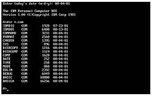
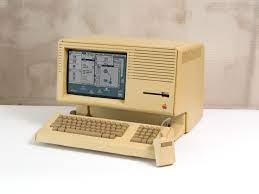
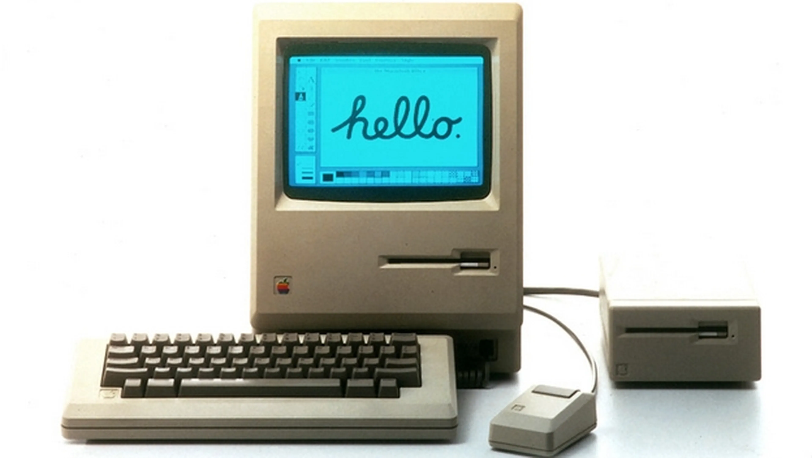
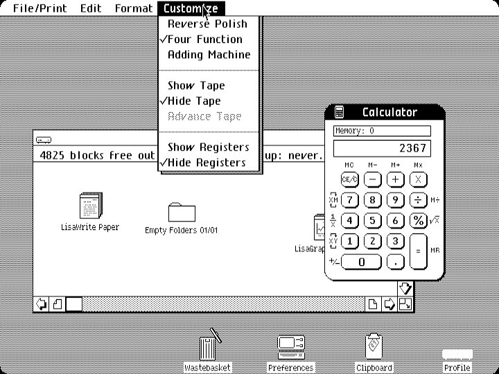
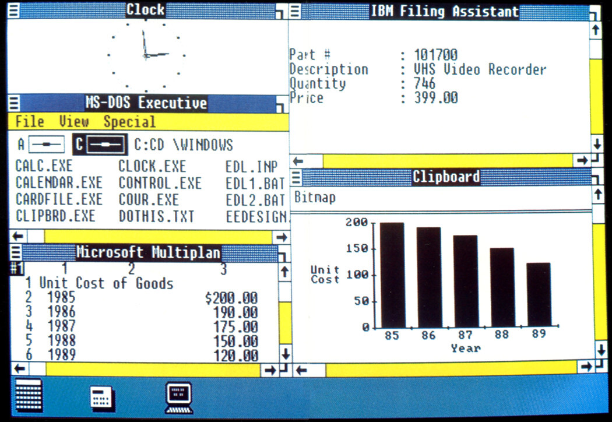

Seattle
Oficinas de Microsoft
1980
Años más tarde un Bill Gates frustrado y casi en la banca rota,
se dirige a las oficinas de IBM que en ese momento ya era una gran corporación
con el proposito de venderles un sistema operativo, algo que ellos necesitaban para
un sistema operativo para las computadoras personales (competencia directa a Apple),
lo llamo DOS, que mas tarde seria finalmente llamado DOS.
DOS

Era un sistema operativoen disco, sirvió de base para el primero sistema operativo de uso masivo.
Los sistemas operativos consiguieron hacer funcionar los ordenadores personales mediante la lectura de
datos ey el
almacenamiento de datos en disquetes.
Los ordenadores se podian controlar con una simple linea ad e comandos basados en texto, lo que hacia
que DOS no solo fuera facil de usar sino
también eficiente y altamente funcional. Adquirido en Seattle Computer Company por la suma de U$D
50.000.
La crusada
"Los buenos artistas copian, los grandes roban"
Xerox presneto algo innovador, algo fuera de lo que estaban acostumbrados, el mouse, los graficos en
lugar de numeros,
tras las negativa de los altos ejecutivos de Xerox, Jobs persuadio a los alto mandos para una
conferencia y asi les mostraran todo el
material en el cual estaban desarrollando en secreto.
Con la inflitración ya consumada tubieron acceso a toda la documentación y detalles de la interface
gráfica,
una verdadera innovación. una ventaja inicial de 1000 millones de dolares.
 "¿los que uds quieren que xeorx considere algo llamado raton?"
"¿los que uds quieren que xeorx considere algo llamado raton?"
Directo a la fortuna
Lisa (1980)
Fue una computadora diseñada y fabricada por Apple computer a principos de la decada de 980 y el segundo
en temer una interfaz gráfica de usuario.
a pesar de no tener éxito comercial en su momento y desaparecer a los pocos años de su lanzameineto, fue
una microcomputadora muy avanzada para su época y pionero en integrar un conjuntos de avances
tecnológicos a nivel de Hardware y software que terminaor convirtiendose en estandares en la industrial
de la computación, como el mouse y a interfaz gráfica de usuario, el sistema de mapa de bits, pantalla
de fondo blanco
con visualización, el disco duro, el microfloppy, la memoria virtual, capacidad de multitarea, ventana
de tareas traslapsable, ect.

Apple lisa
La "visita"
"Lo quiero!!"
1983
Tras una visita a Apple Computers, Steve Jobs, les presenta la Apple macintosh,
una computadora con mouse, interface grafica, tras la visita Bill Gates consigue persuadir
Seteve Jobs de trabajar para ellos, para Apple, de esta forma Microsoft Computer, Bill Gates, logra
obtener
3 computadoras macintosh con el sistema operativo, com la promesa de mejorar el software. Sin darse
cuenta que
que estaba entregando a la competencia sus diseños sin lanzarse.
Apple macintosh

macOS VS Windows 1.0
193
Apple lanzó el Apple Lisa en enero de 1983, que incluía el "Lisa Office System", el entorno gráfico
predecesor de OS X y macOs de la actualidad. Pese al tiempo que ha pasado la interface no ha cambiado
mucho desde entocnes;
ya entonces tenía una barra de menú superior, que mostraba accesos a funciones y acciones.
macOS

Enero de 1983
Windows 1.0 VS macOS
1983
Por su parte, Microsoft presentó Windows 1.0 en noviembre de 1983; si bien no llegó al mercado hasta
dos años después. Se trataba de un entorno que se ejecutaba encima del sistema operativo MS-DOS; y
de nuevo nos encontramos con elementos que asociamos con Windows desde entonces, como la barra de
tareas inferior.
Windows 1.0

Diciembre 1983